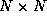
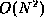

Directory Contents
This version of Matrix Multiply multiplies two  matrices in
time given  hardware multipliers. This runtime
is achieved by implementing a vector-matrix multiplier, which stores
an initial matrix away, and repeatedly returns its product with an
input vector. The multiplication stage of the dot products is in
parallel while the additions are scheduled in a binary-tree
fashion, with levels.